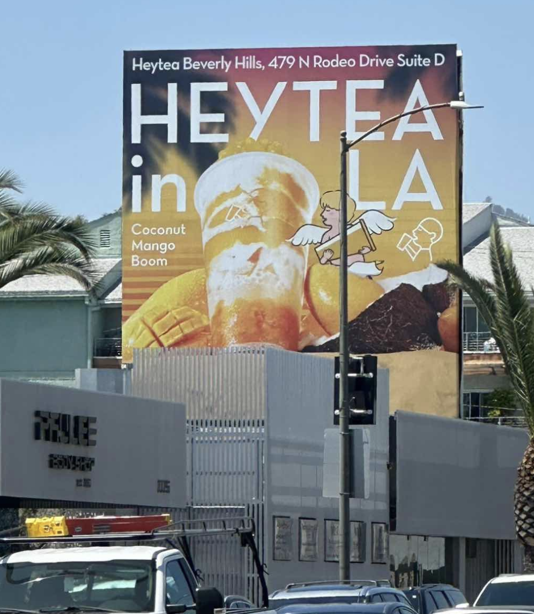

Beverly Hills Premium Entry
Beverly Hills 高端选址进入
HEYTEA's Beverly Hills entry placed the brand directly inside a luxury retail and lifestyle context. This gives the brand a strong premium signal from the first touchpoint.
喜茶通过 Beverly Hills 首店进入洛杉矶高端零售和生活方式语境，这让品牌从第一个触点就具备了高端感和城市象征意义.